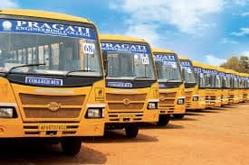
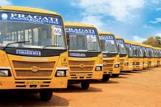
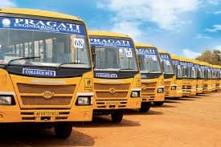
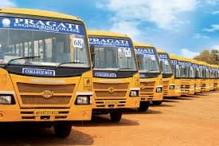

Sri Chaintanya Techno Schools
Vi: Dilsuknagar Mdl: SarrorNagar Dist:RR
Home Services Buses Fee Details Contact Us
We are having more than 25 ac buses
 



Sri Chaitanya started in 1986 with a girls' junior college in Vijayawada.[1] Sri Chaitanya Techno School (also called SCTS) was opened in Eluru in June 2010 on the Santhinagar Main road. It has 1006 students studying from kindergarten to 10th class in main branch and other 570 members in 1town branch. It operates bus services to all parts of the city. It is also known as Chaitanya school main branch in West Godavari district.
Sri Chaitanya started in 1986 with a girls' junior college in Vijayawada.[1] Sri Chaitanya Techno School (also called SCTS) was opened in Eluru in June 2010 on the Santhinagar Main road. It has 1006 students studying from kindergarten to 10th class in main branch and other 570 members in 1town branch. It operates bus services to all parts of the city. It is also known as Chaitanya school main branch in West Godavari district.
Sri Chaitanya started in 1986 with a girls' junior college in Vijayawada.[1] Sri Chaitanya Techno School (also called SCTS) was opened in Eluru in June 2010 on the Santhinagar Main road. It has 1006 students studying from kindergarten to 10th class in main branch and other 570 members in 1town branch. It operates bus services to all parts of the city. It is also known as Chaitanya school main branch in West Godavari district.